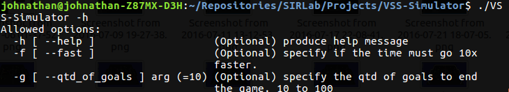

Obtenha os estados do VSS-Simulator e Controle os Robôs
Como utilizar o VSS-Vision e os outros projetos do VSS-SDK
O VSS-Simulator é um simulador de partidas para a categoria de futebol de robôs IEEE Very Small Size [Soccer], nesse é possível realizar partidas entre duas estratégias que utilizem a API para se comunicar com os projetos do VSS-SDK. Um exemplo de como utilizar a API encontra-se no projeto VSS-SampleStrategy.
Aqui encontra-se o funcionamento do programa, isto é, como executar duas estratégias com o simulador, alterar o número de gols necessários ou o tempo para termino de uma partida e obter o relatório de final de partida.
O VSS-Simulator abre três sockets para comunicação. O primeiro socket é multicast (porta: 5555) e trata de enviar os estados do jogo utilizando o protocolo definido em vss_state::Global_State, isto é, posição, orientação e velocidades de cada robô e da bola. Também é aberto dois sockets de recepção unicast (TCP/IP) um para o time amarelo (porta: 5556) e outro para o time azul (porta: 5557). Ambos utilizando o protocolo vss_command::Global_Command.
Criando uma estratégia que leia o protocolo vss_state::Global_State da porta 5555 e escreva com o protocolo vss_command::Global_Command na porta 5556 se o time estiver utilizando a cor amarela ou na porta 5557 se o time estiver utilizando a cor azul. É possivel comunicar-se com o simulador. Para facilitar esse trabalho foi criado um exemplo que é o VSS-SampleStrategy.
O simulador não possui uma interface gráfica por padrão, com esse intuito é utilizado de maneira opcional o projeto VSS-Viewer. Essa decisão foi feita para reforçar o compromisso de compatibilidade entre todos os projetos do VSS-SDK, assim garantindo que o espaço é representado na mesma forma no VSS-Vision e no VSS-Simulator. Não havendo necessidade de alterar valores na estratégia caso a mesma esteja rodando no ambiente real ou simulado.
Após execução de uma partida o simulador imprime algumas informações no terminal, assim facilitando a implementação de uma Inteligência Artificial. O relatório contém: Quantidade de passos (3500 passos = 1 minuto de jogo), Total de gols de cada time, Total de gols contra por cada robô de cada time, Total de colisões em alta velocidade por cada robô de cada time, Posse de bola de cada time, Distância percorrida por cada robô de cada time, e Tempo desperciçado travado por cada robô de cada time.
O projeto possibilita acelerar o tempo da simulação em 25 vezes através do parâmetro -f e alterar a quantidade gols necessários para termino da partida com o parâmetro -g de 10 á 100.
Aqui encontra-se alguns aspectos técnicos sobre o funcionamento do sistema de visão computacional, como, as bibliotecas utilizadas e o motivo de utiliza-las.
A Bullet Physics é uma biblioteca de simulação que inclui um motor de física e é utilizada desde jogos a filmes. A biblioteca inclui: Simulações com corpo rígido e macio; Deteção de colisões discretas e contínuas; Corpos com formato de esfera, cubo, cilíndro, cone, formas convexas e malha de triângulos; Objetos macios do tipo tecido, corda e objetos deformáveis; Restrições físicas quanto a motores.

O VSS-Simulator envia o estado de jogo via sockets, para isso é utilizado a biblioteca Google Procol Buffers (Protobuf) para serializar e deserializar as mensagens, pois dentre todas as opções existentes a mesma apresenta um dos melhores desempenhos e pode ser utilizada em diversas linguagens. A biblioteca é neutra em linguagem e neutra em plataforma, como XML, porém menor, mais rapido e simples.
Para enviar os dados o sistema abre um envio multicast na porta 5555, para isso, é utilizado a biblioteca ZeroMQ. A biblioteca também busca ser neutra em linguagem e plataforma, assim o simulador e todos os outros projetos estão aptos a rodar em múltiplos computadores com SOs diferentes. É possivel desenvolver um módulo de inteligência que se comunique com os projetos do VSS-SDK nas seguintes linguagens: C++, Java, Python, JavaScript, Go, Ruby, Objective-C, C#, Perl, PHP, Scala e Julia.
Como utilizar o VSS-Vision e os outros projetos do VSS-SDK